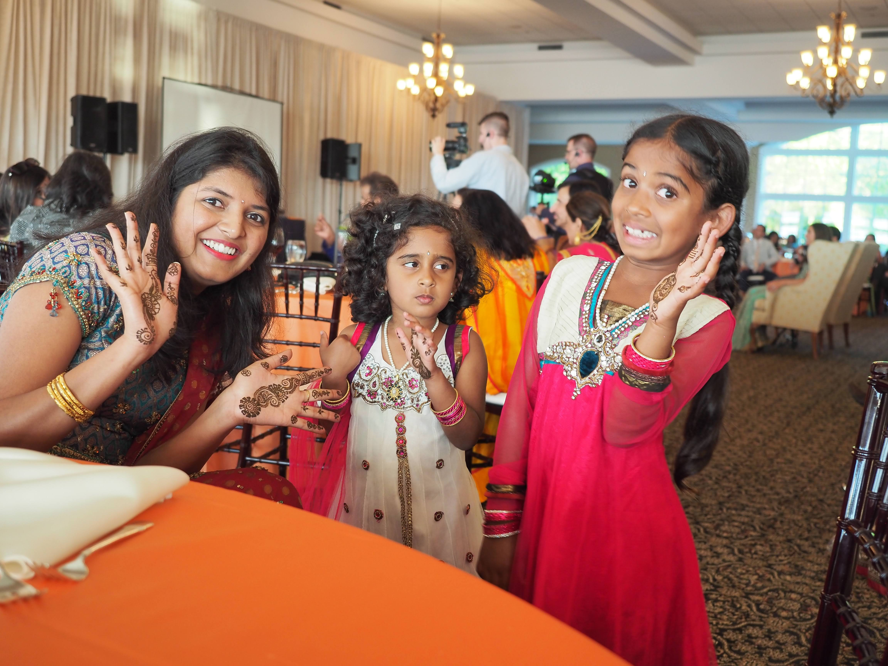

My Family
I’m Kavya, a junior in high school from San Diego, California. My parents immigrated here from Tamil Nadu, India, where many of my relatives live. My younger sister and I were born in San Diego, though we’ve traveled to India every one or two summers. From these trips, I’ve developed close relationships with my cousins on my dad’s side of the family. We’ve visited them more often in the past years, now that they live in the U.S. Another group of people I consider to be family is my close group of friends, most of whom I’ve known since middle school. Some of my favorite memories with them include our annual Friendsgiving party, our trip to Knott’s Berry Farm last summer, and swimming together at the beach.

My Hobbies
I’ve loved to read since I was younger; my favorite books are The God of Small Things by Arundhati Roy, Her Body and Other Parties by Carmen Maria Machado, and Rainbow Rowell’s Carry On trilogy. I started writing short stories when I entered high school, which is also when I became part of CCA’s Creative Writers’ Club. I’m one of the co-presidents of the club now, and doing writing activities and making jokes with the club has been a constant source of happiness for me through high school. Something else I’ve picked up—often just as fantastical as creative writing—is crafting my own elaborate Halloween costumes, a tradition that began in middle school with a pair of fairy wings that I created out of thick wire and sparkly cellophane paper. Last year, I made my own princess hat out of pink satin, tulle, and lace for my princess costume. I also love swimming at the beach, riding my bike, and drinking lavender oatmilk lattes.
Bharathanatyam
My sister and I both learn Bharathanatyam, a form of Indian classical dance. Although I appreciate how dance allows me to strengthen and challenge my body, what I enjoy most is its storytelling aspect. For every piece we learn, there is a story from folklore that we must emulate using movements and expressions. An arangetram is a three-hour solo performance representing the culmination of a bharathanatyam dancer’s classical training. My favorite piece I've ever learned is called "Durga Durga", where my classmates and I portray the Goddess Durga slaying a demon. My sister and I are currently practicing for our arangetram, which, instead of a solo performance, will be both of us together on the same stage.